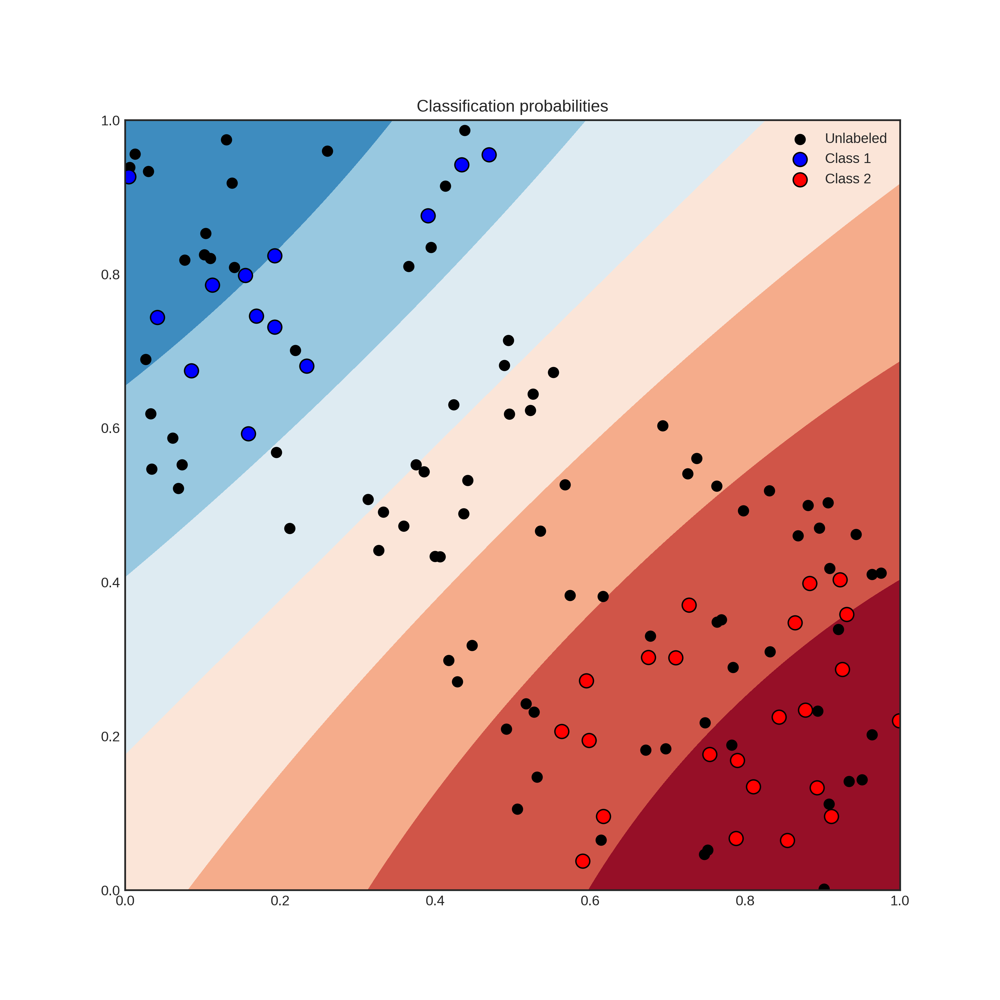
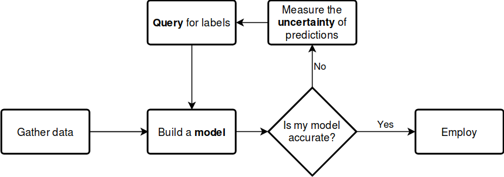
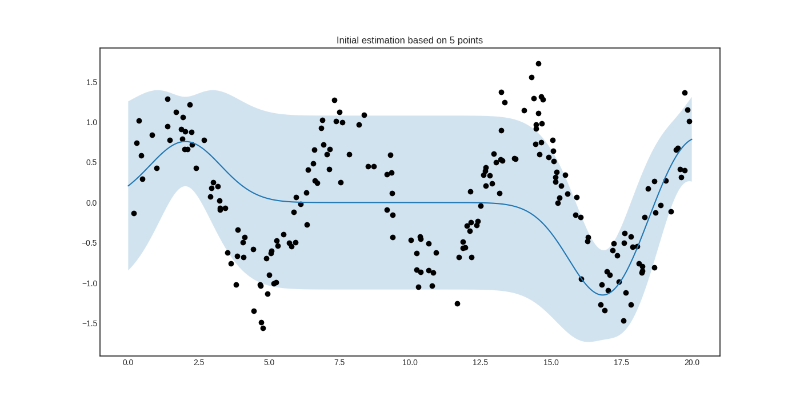

modAL in a nutshell¶
Introduction¶
modAL is an active learning framework for Python3, designed with modularity, flexibility and extensibility in mind. Built on top of scikit-learn, it allows you to rapidly create active learning workflows with nearly complete freedom. What is more, you can easily replace parts with your custom built solutions, allowing you to design novel algorithms with ease.
Active learning from bird’s-eye view¶
With the recent explosion of available data, you have can have millions of unlabelled examples with a high cost to obtain labels. For instance, when trying to predict the sentiment of tweets, obtaining a training set can require immense manual labour. But worry not, active learning comes to the rescue! In general, AL is a framework allowing you to increase classification performance by intelligently querying you to label the most informative instances. To give an example, suppose that you have the following data and classifier with shaded regions signifying the classification probability.
Suppose that you can query the label of an unlabelled instance, but it costs you a lot. Which one would you choose? By querying an instance in the uncertain region, surely you obtain more information than querying by random. Active learning gives you a set of tools to handle problems like this. In general, an active learning workflow looks like the following.
The key components of any workflow are the model you choose, the uncertainty measure you use and the query strategy you apply to request labels. With modAL, instead of choosing from a small set of built-in components, you have the freedom to seamlessly integrate scikit-learn or Keras models into your algorithm and easily tailor your custom query strategies and uncertainty measures.
modAL in action¶
Let’s see what modAL can do for you!
From zero to one in a few lines of code¶
Active learning with a scikit-learn classifier, for instance RandomForestClassifier, can be as simple as the following.
from modAL.models import ActiveLearner
from sklearn.ensemble import RandomForestClassifier
# initializing the learner
learner = ActiveLearner(
estimator=RandomForestClassifier(),
X_training=X_training, y_training=y_training
)
# query for labels
query_idx, query_inst = learner.query(X_pool)
# ...obtaining new labels from the Oracle...
# supply label for queried instance
learner.teach(X_pool[query_idx], y_new)
Replacing parts quickly¶
If you would like to use different uncertainty measures and query strategies than the default uncertainty sampling, you can either replace them with several built-in strategies or you can design your own by following a few very simple design principles. For instance, replacing the default uncertainty measure to classification entropy looks the following.
from modAL.models import ActiveLearner
from modAL.uncertainty import entropy_sampling
from sklearn.ensemble import RandomForestClassifier
learner = ActiveLearner(
estimator=RandomForestClassifier(),
query_strategy=entropy_sampling,
X_training=X_training, y_training=y_training
)
Replacing parts with your own solutions¶
modAL was designed to make it easy for you to implement your own query strategy. For example, implementing and using a simple random sampling strategy is as easy as the following.
import numpy as np
def random_sampling(classifier, X_pool):
n_samples = len(X_pool)
query_idx = np.random.choice(range(n_samples))
return query_idx, X_pool[query_idx]
learner = ActiveLearner(
estimator=RandomForestClassifier(),
query_strategy=random_sampling,
X_training=X_training, y_training=y_training
)
For more details on how to implement your custom strategies, visit the page Extending modAL!
An example with active regression¶
To see modAL in real action, let’s consider an active regression problem with Gaussian processes! In this example, we shall try to learn the noisy sine function:
import numpy as np
X = np.random.choice(np.linspace(0, 20, 10000), size=200, replace=False).reshape(-1, 1)
y = np.sin(X) + np.random.normal(scale=0.3, size=X.shape)
For active learning, we shall define a custom query strategy tailored to
Gaussian processes. In a nutshell, a query stategy in modAL is a
function taking (at least) two arguments (an estimator object and a pool
of examples), outputting the index of the queried instance and the
instance itself. In our case, the arguments are regressor and X.
def GP_regression_std(regressor, X):
_, std = regressor.predict(X, return_std=True)
query_idx = np.argmax(std)
return query_idx, X[query_idx]
After setting up the query strategy and the data, the active learner can be initialized.
from modAL.models import ActiveLearner
from sklearn.gaussian_process import GaussianProcessRegressor
from sklearn.gaussian_process.kernels import WhiteKernel, RBF
n_initial = 5
initial_idx = np.random.choice(range(len(X)), size=n_initial, replace=False)
X_training, y_training = X[initial_idx], y[initial_idx]
kernel = RBF(length_scale=1.0, length_scale_bounds=(1e-2, 1e3)) \
+ WhiteKernel(noise_level=1, noise_level_bounds=(1e-10, 1e+1))
regressor = ActiveLearner(
estimator=GaussianProcessRegressor(kernel=kernel),
query_strategy=GP_regression_std,
X_training=X_training.reshape(-1, 1), y_training=y_training.reshape(-1, 1)
)
The initial regressor is not very accurate.
The blue band enveloping the regressor represents the standard deviation of the Gaussian process at the given point. Now we are ready to do active learning!
# active learning
n_queries = 10
for idx in range(n_queries):
query_idx, query_instance = regressor.query(X)
regressor.teach(X[query_idx].reshape(1, -1), y[query_idx].reshape(1, -1))
After a few queries, we can see that the prediction is much improved.

Additional examples¶
Including this, many examples are available:
Citing¶
If you use modAL in your projects, you can cite it as
@article{modAL2018,
title={mod{AL}: {A} modular active learning framework for {P}ython},
author={Tivadar Danka and Peter Horvath},
url={https://github.com/cosmic-cortex/modAL},
note={available on arXiv at \url{https://arxiv.org/abs/1805.00979}}
}
About the developer¶
modAL is developed by me, Tivadar Danka (aka cosmic-cortex in GitHub). I have a PhD in pure mathematics, but I fell in love with biology and machine learning right after I finished my PhD. I have changed fields and now I work in the Bioimage Analysis and Machine Learning Group of Peter Horvath, where I am working to develop active learning strategies for intelligent sample analysis in biology. During my work I realized that in Python, creating and prototyping active learning workflows can be made really easy and fast with scikit-learn, so I ended up developing a general framework for this. The result is modAL :) If you have any questions, requests or suggestions, you can contact me at 85a5187a@opayq.com! I hope you’ll find modAL useful!